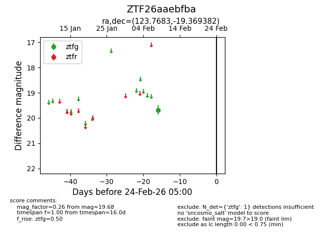
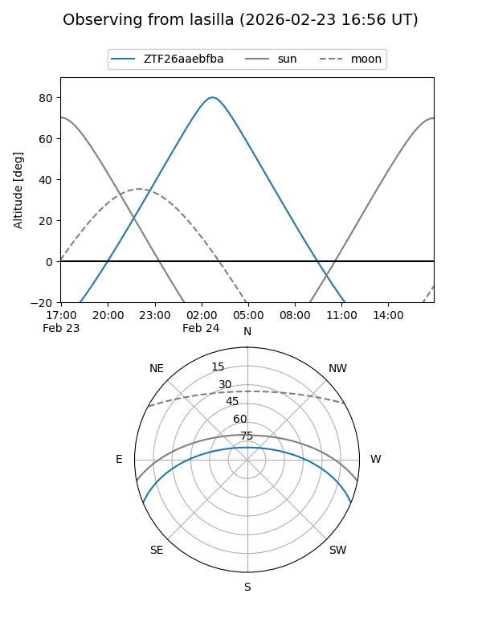
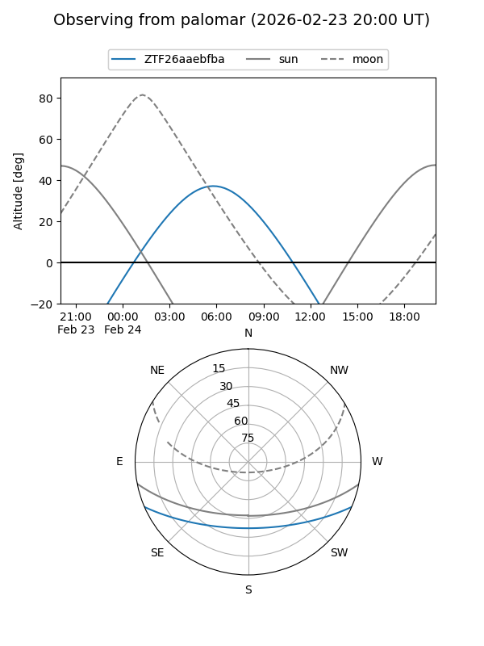

ZTF26aaebfba
Target ZTF26aaebfba at 2026-02-24 09:08
Aliases and brokers:
FINK: link
Lasair: link
ALeRCE: link
alt names
ZTF26aaebfba (ztf,fink_ztf)
Coordinates:
equatorial (ra, dec) = 123.7683,-19.36938
equatorial (HMS+DMS) = 08:15:04.38,-19:22:09.78
galactic (l, b) = (239.9143,+8.53494)
Flags:
Photometry:
last ztfg=19.68
1 ztfg detections
Lightcurve

Visibility


Additional plots